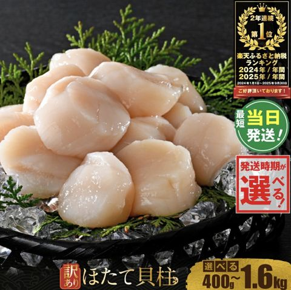
1上限の中なら、自己負担は2,000円。まずは限度額を計算して、はむたの超おすすめ返礼品から選んでね。
※会社員・ボーナスなし・東京都（協会けんぽ）・2026年の税制で計算した目安です（はむた試算）。住宅ローン控除・医療費控除・副業などは入っていません。上限ぴったりではなく、少し少なめに寄附するのが安心です。
※個人事業主は、国民年金（2026年度 月17,920円）と国民健康保険料を引いて計算します。国保の額が空欄のときは「所得の約1割＋均等割」のざっくりした目安を使うので、納付書の額を入れるとより正確になります。2026年の税制で計算した目安です（はむた試算）。個人事業主はワンストップ特例が使えないので、確定申告でふるさと納税を申告してください。
※金額はあくまで目安であり、より正確な金額を知りたい場合は、税理士等にご確認ください。
← 表は横にスクロールできます →
| 年収 | 独身・ 共働き | 夫婦 | 夫婦＋ 高校生 | 夫婦＋ 大学生 | 夫婦＋高校生 ＋大学生 |
|---|
※金額はあくまで目安であり、より正確な金額を知りたい場合は、税理士等にご確認ください。
※「夫婦」は配偶者の年収が少なく配偶者控除を受けている場合、「高校生」は16〜18歳、「大学生」は19〜22歳の子ども。「共働き」は配偶者控除がない夫婦です。会社員・ボーナスなし・iDeCoなし・2026年の税制で計算した目安（はむた試算）。
※限度額は上のシミュレーターと同じ計算（会社員・ボーナスなし・iDeCoなし・2026年の税制）。自己負担2,000円を引いた額が、所得税と住民税から安くなる目安です。※金額はあくまで目安であり、より正確な金額を知りたい場合は、税理士等にご確認ください。
目的・予算・暮らしから選ぶだけ。ボタンひとつで「あなたの組み合わせ」に入ります。
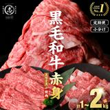
鹿児島県産 黒毛和牛 赤身（1kg〜）鹿児島県志布志市・15,000円〜楽天で見る ›牛・豚・牛タン・ハンバーグで冷凍庫がお肉でいっぱいに。都城市は2品まとめて1自治体。（4自治体）
スーパーで毎週買うものを中心に。お米・豚こま・鶏肉・洗剤・トイレットペーパーで食費と日用品費をまとめて節約。（5自治体）
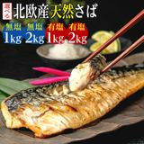
骨取りさば 切り身（約1kg〜）千葉県銚子市・10,000円〜楽天で見る ›お米と「ごはんのおとも」の組み合わせ。いくら・鮭・さば・ねぎとろで毎日の丼が楽しみに。（4自治体）
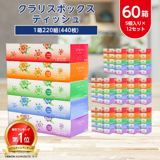
クラリス ボックスティッシュ 60箱栃木県小山市・16,500円〜楽天で見る ›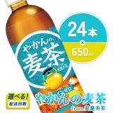
やかんの麦茶 from 爽健美茶（650ml×24本）宮崎県えびの市・8,200円〜楽天で見る ›ティッシュ・トイレットペーパー・洗剤・水・お茶。買い物で運ぶのが大変なものをまとめて家まで。（5自治体）
かに・いくら・うなぎに年越しそば。12月に届くものを選んで、お正月のごちそうに。（4自治体）
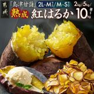
熟成紅はるか さつまいも（2kg〜）宮崎県都城市・4,000円〜楽天で見る ›5,000円以下の返礼品だけ。限度額まであと少し、というときに1品ずつ足せます。（5自治体）
毎日食べるお米を中心に、ちょっとしたごほうびも。（4自治体）
同じ自治体に2回寄附しても1自治体と数えるので、お米を2回にしてもワンストップ特例が使えます。（5自治体）
人気の海鮮とお肉を多めに。5自治体にまとめてワンストップ特例の範囲に。（5自治体）
小分けで使いやすいもの中心。焼くだけ・のせるだけで一品になります。（4自治体）
見つかりませんでした。別のキーワードで試してね。
人気No.1。訳ありでも味は同じ、普段使いしやすい。
楽天ふるさと納税で楽天で見る ›ごはんにのせるだけでごちそうに。年末年始にも。
楽天ふるさと納税で楽天で見る ›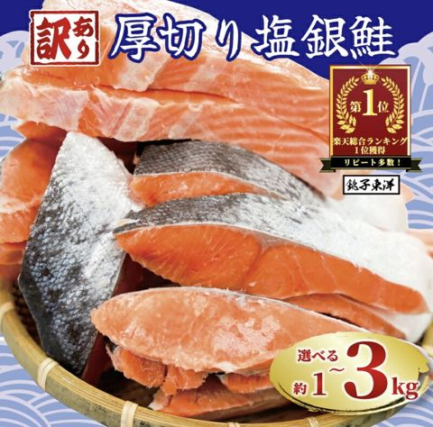
楽天 上半期 3位焼くだけで一品。お弁当のおかずにも便利。
楽天ふるさと納税で楽天で見る ›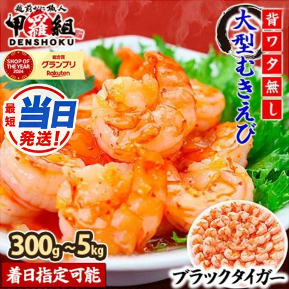
楽天 上半期 12位背ワタなし・殻むき済み。エビフライや炒め物にすぐ使える。
楽天ふるさと納税で楽天で見る ›殻むき不要のカット済み。かにしゃぶにも鍋にも、年末のごちそうに。
楽天ふるさと納税で楽天で見る ›身がぎっしりの棒肉だけ。むく手間なしで、そのまま鍋やしゃぶしゃぶに。
楽天ふるさと納税で楽天で見る ›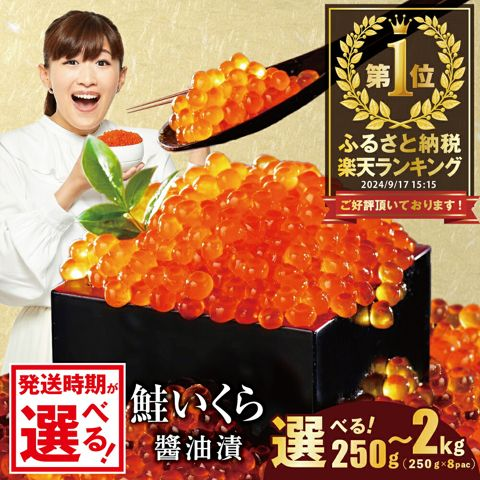
はむた厳選250gから量を選べる。ホタテ・牛タンと同じ別海町なので寄附先が増えない。
楽天ふるさと納税で楽天で見る ›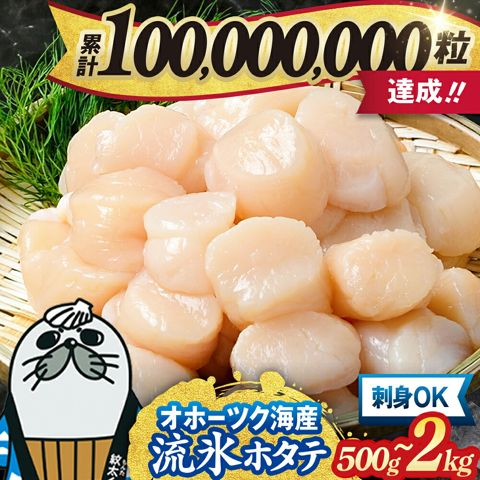
はむた厳選年間総合ランキング4年連続1位。大粒でお刺身にできる定番のほたて。
楽天ふるさと納税で楽天で見る ›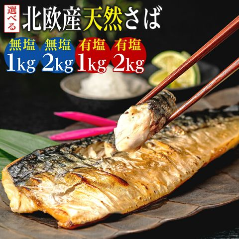
はむた厳選骨取り済みで子どもにも食べやすい。焼くだけで一品、無塩・有塩を選べる。
楽天ふるさと納税で楽天で見る ›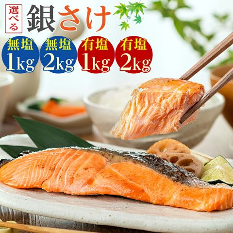
はむた厳選骨なしで食べやすい。塩銀鮭と同じ銚子市なので、まとめて頼みやすい。
楽天ふるさと納税で楽天で見る ›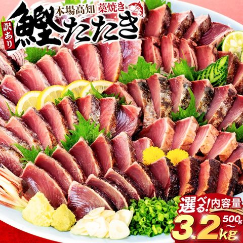
はむた厳選本場高知の藁焼き。少ない寄附額から選べて、残りの枠を埋めるのにぴったり。
楽天ふるさと納税で楽天で見る ›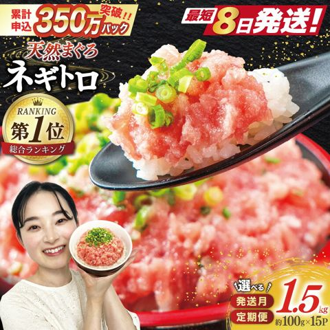
はむた厳選小分け袋で使う分だけ解凍。丼や手巻き寿司にすぐ使える。
楽天ふるさと納税で楽天で見る ›国産うなぎの特上サイズ。ちょっといい夕ごはんのごちそう枠に。
楽天ふるさと納税で楽天で見る ›すき焼き・焼肉・しゃぶしゃぶに。カットと量を選べるごちそう枠。
楽天ふるさと納税で楽天で見る ›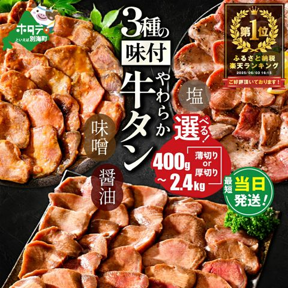
楽天 上半期 9位焼くだけ簡単。ホタテと同じ町でまとめると寄附先が増えない。
楽天ふるさと納税で楽天で見る ›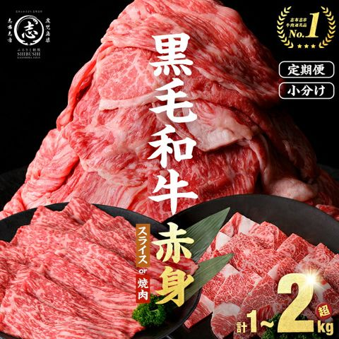
はむた厳選スライスか焼肉用を選べる赤身。普段の夕ごはんで使いやすい。
楽天ふるさと納税で楽天で見る ›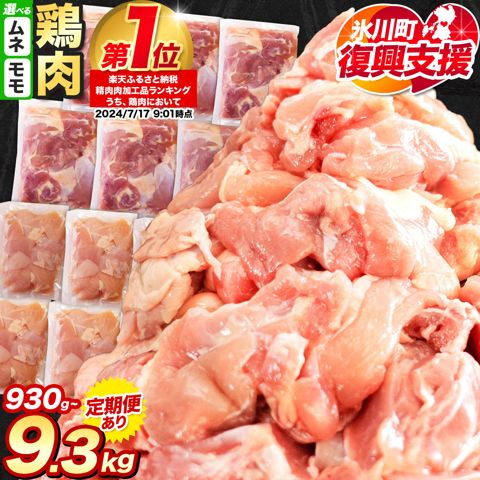
はむた厳選カット済みの小分けパック。少ない寄附額で毎日のおかずに使える。
楽天ふるさと納税で楽天で見る ›ロース・バラ・肩ロース・モモの小分けセット。宮崎牛と同じ都城市でまとめられる。
楽天ふるさと納税で楽天で見る ›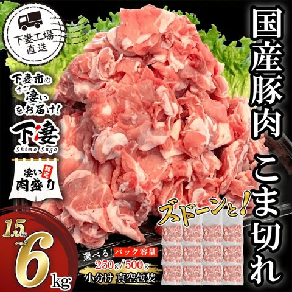
はむた厳選いちばん出番の多い豚こま。250gずつの小分けで使いやすい。
楽天ふるさと納税で楽天で見る ›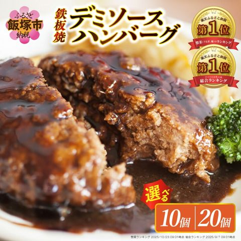
楽天 上半期 15位温めるだけの個包装。一人暮らしにも家族にも便利。
楽天ふるさと納税で楽天で見る ›近江牛と淡路島産玉ねぎ入り。少ない寄附額から選べる人気のハンバーグ。
楽天ふるさと納税で楽天で見る ›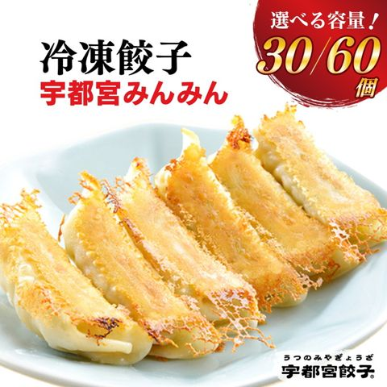
はむた厳選宇都宮の有名店の味。焼くだけで夕ごはんの一品に。
楽天ふるさと納税で楽天で見る ›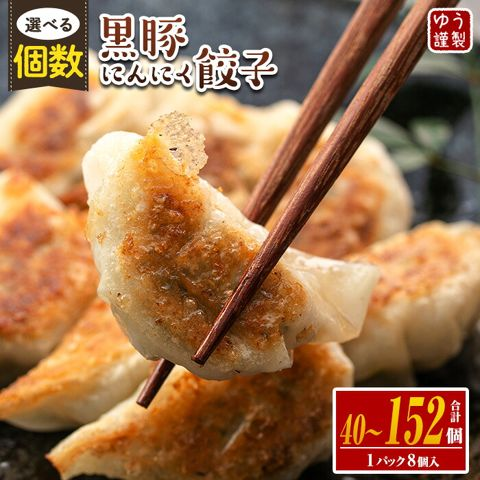
はむた厳選鹿児島の黒豚入り。8個ずつのパックで使う分だけ焼ける。
楽天ふるさと納税で楽天で見る ›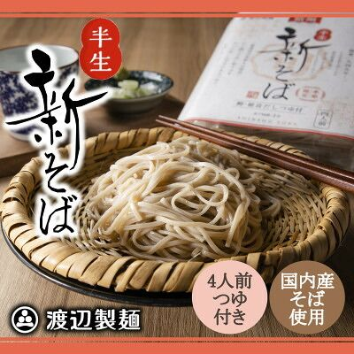
はむた厳選12月発送の新そば。大みそかの年越しそばにぴったり。
楽天ふるさと納税で楽天で見る ›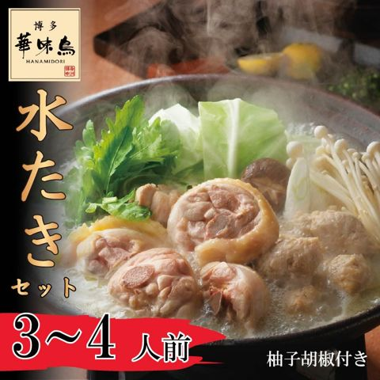
はむた厳選博多の名店の水たき。スープ付きで、鍋の日がそのままごちそうに。
楽天ふるさと納税で楽天で見る ›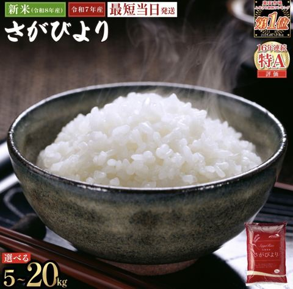
楽天 上半期 4位少ない寄附額から選べる、食費が浮く定番。
楽天ふるさと納税で楽天で見る ›毎日食べるお米は、いちばん家計に効く返礼品。
楽天ふるさと納税で楽天で見る ›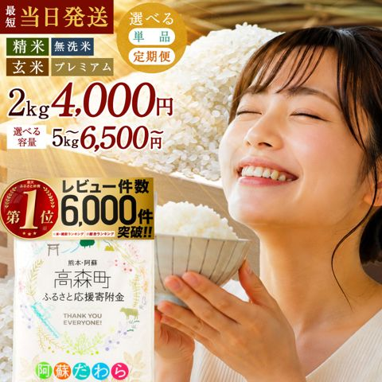
はむた厳選4,000円から選べる、いちばん気軽なお米。あと少しの枠を埋めたいときに。
楽天ふるさと納税で楽天で見る ›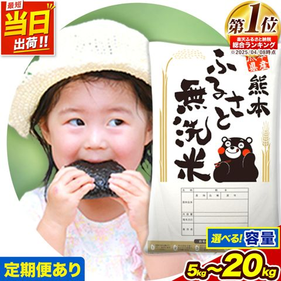
はむた厳選研がずに炊ける無洗米。忙しい家庭や一人暮らしの手間を減らせる。
楽天ふるさと納税で楽天で見る ›皮ごと食べられる甘い粒。500gから選べて、季節のごほうびに。
楽天ふるさと納税で楽天で見る ›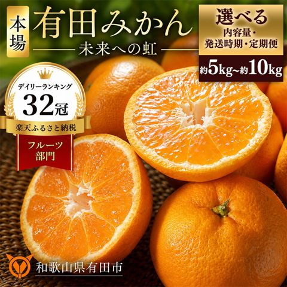
はむた厳選世界農業遺産の産地から届く本場の有田みかん。冬のこたつのおともに、家族でたっぷり。
楽天ふるさと納税で楽天で見る ›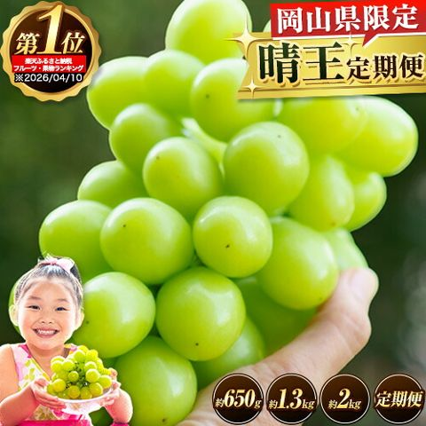
はむた厳選岡山県限定ブランドの晴王。約650gから選べて、定期便もある。
楽天ふるさと納税で楽天で見る ›2027年3〜5月に届く先行予約。春のごほうびに。
楽天ふるさと納税で楽天で見る ›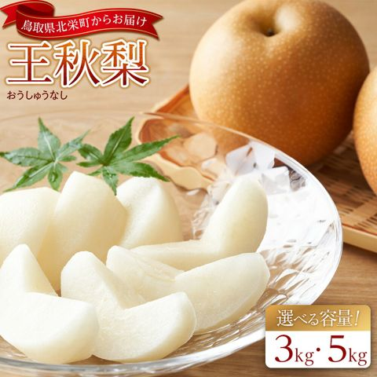
はむた厳選10月下旬〜12月に届く大玉の梨。日持ちしやすい品種。
楽天ふるさと納税で楽天で見る ›見た目に訳ありでも味は同じ。1kg以上たっぷり、11月までの旬に。
楽天ふるさと納税で楽天で見る ›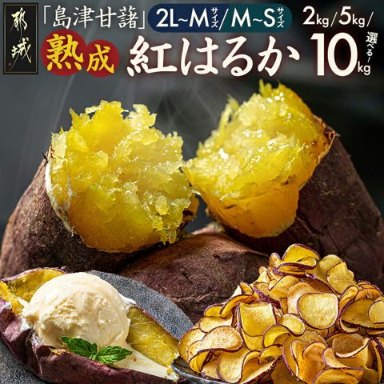
はむた厳選4,000円から選べる熟成さつまいも。焼き芋にすると甘さが際立つ。
楽天ふるさと納税で楽天で見る ›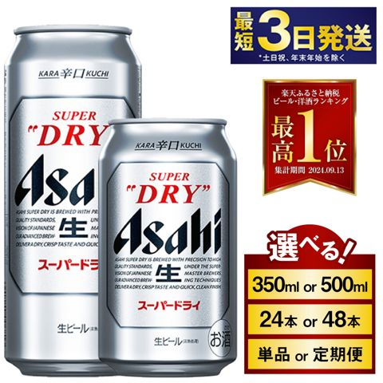
はむた厳選アサヒの工場がある守谷市から。重いビールの箱を家まで届けてもらえる。
楽天ふるさと納税で楽天で見る ›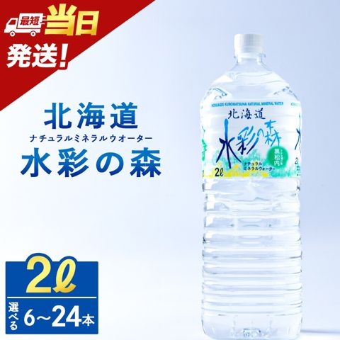
はむた厳選3,000円から選べる天然水。限度額の端数を埋めるのにぴったり。
楽天ふるさと納税で楽天で見る ›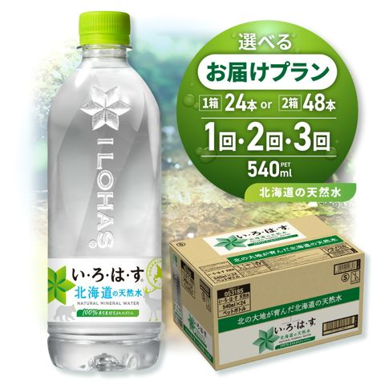
はむた厳選持ち歩きやすい540ml。定期便も選べる。
楽天ふるさと納税で楽天で見る ›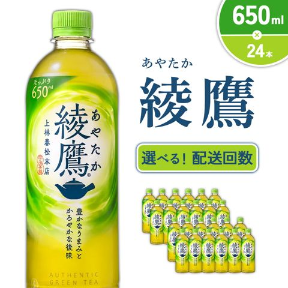
はむた厳選定番の緑茶を箱で。重いペットボトルが玄関まで届く。
楽天ふるさと納税で楽天で見る ›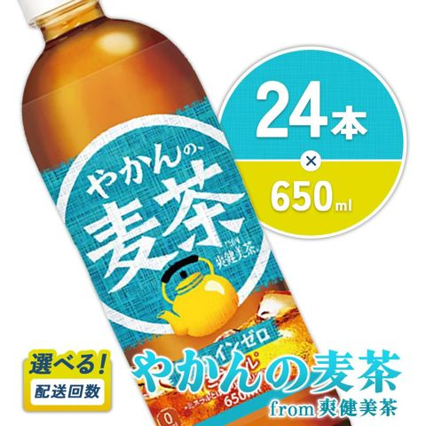
はむた厳選ノンカフェインで家族みんなで飲める。綾鷹と同じえびの市。
楽天ふるさと納税で楽天で見る ›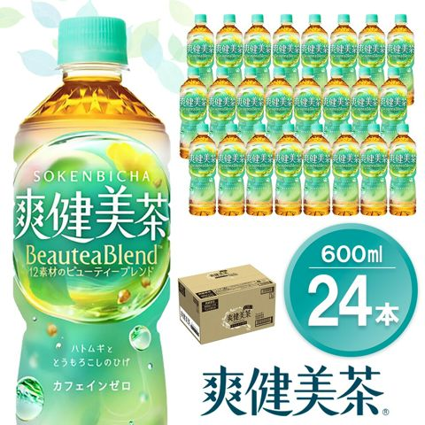
はむた厳選カフェインゼロのブレンド茶。毎日飲む家のお茶に。
楽天ふるさと納税で楽天で見る ›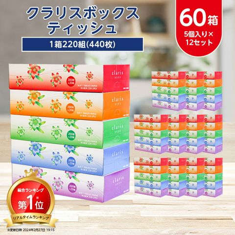
楽天 上半期 7位重くてかさばる日用品こそ、家まで届くのがうれしい。
楽天ふるさと納税で楽天で見る ›1.5倍巻きで交換の手間が少ない。重い日用品こそ家まで届くとラク。
楽天ふるさと納税で楽天で見る ›おなじみのエリエール。消臭タイプでほんのり香る。
楽天ふるさと納税で楽天で見る ›配送月を選べて、24ロールの小容量から頼める。
楽天ふるさと納税で楽天で見る ›毎日使う洗濯洗剤こそ、ふるさと納税で浮かせたい。
楽天ふるさと納税で楽天で見る ›部屋干しのにおいを抑える抗菌タイプ。本体か詰め替えを選べる。
楽天ふるさと納税で楽天で見る ›ものづくりの町・燕三条の鍋。冬の鍋料理に長く使える。
楽天ふるさと納税で楽天で見る ›宝飾の町・甲府の開運置物。金は約0.3gなので、資産づくり目的には向かない記念品として。
楽天ふるさと納税で楽天で見る ›「おすすめの組み合わせ」を入れるか、返礼品の ☆ を押すと、ここに並びます。
※寄附先は0自治体なので、ワンストップ特例が使えます。寄附額は最低額の目安です。
応援したい自治体に寄附すると、寄附額から2,000円を引いた額が、所得税と住民税から差し引かれる制度です。お礼として地域の特産品（返礼品）が届きます。返礼品は寄附額の3割以下で、その地域の地場産品に限られています。
税金が安くなる額には上限（限度額）があります。限度額は、年収・家族構成・社会保険料・住宅ローン控除などで変わります。限度額を超えて寄附した分は税金から引かれず、そのまま自己負担になります。
会社員（独身または共働き）の場合の目安は、年収300万円で約2.8万円、400万円で約4.2万円、500万円で約5.8万円、600万円で約7.8万円、700万円で約10.8万円、800万円で約13.1万円、1,000万円で約18.4万円です。配偶者の年収が少ない夫婦（配偶者控除あり）の場合は、年収500万円で約5.0万円、700万円で約8.7万円になります。くわしくは上の限度額シミュレーターで計算できます。
会社員などで確定申告をしない人は、寄附先が5自治体以内なら「ワンストップ特例」が使えます。寄附先ごとに申請書を出せば、確定申告なしで翌年の住民税が安くなります（翌年1月10日必着）。個人事業主や医療費控除を受ける人など、確定申告をする人は、確定申告でふるさと納税も申告します。
1月1日〜12月31日に寄附した分が、その年の分になります。年末に近いほど年収がはっきりして限度額を正確に見積もれますが、人気の返礼品は品切れになることもあります。12月は駆け込みで混み合うので、クレジットカード払いで早めに済ませるのが安心です。
寄附した翌年の1月10日必着です。寄附先ごとに1枚ずつ必要です。自治体によっては、マイナンバーカードを使ってオンラインで申請できます。
確定申告をする人です。たとえば個人事業主、医療費控除を受ける人、住宅ローン控除の1年目の人、年収2,000万円を超える人など。寄附先が6自治体以上のときも使えません。確定申告をするなら、ふるさと納税も確定申告に書きます（ワンストップ特例の申請は無効になります）。
使えます。ただ、確定申告で申告する年は、住宅ローン控除で所得税がほぼ0円になると、ふるさと納税の控除の一部を使い切れないことがあります。上限より少なめに寄附するのが安心です。
限度額は、その年1月〜12月の収入の合計で決まります。転職した年は、前の会社と今の会社の源泉徴収票を合わせて考えます。退職などで年収が下がりそうなら、少なめにしておきましょう。
夫と妻それぞれに限度額があります。寄附する人の名義と、税金が安くなる人（その人の給与で税金を払っている人）を同じにしてください。上のシミュレーターは「独身・共働き」で、ひとりずつ計算できます。
寄附した日は、クレジットカードなら決済が終わった日になります。銀行振込や郵便振替は年内に入金が確認できないことがあるので、年末はクレジットカード払いが安心です。
ワンストップ特例なら、翌年6月からの住民税が少しずつ安くなります。確定申告なら、所得税の還付と、翌年6月からの住民税の減額に分かれます。